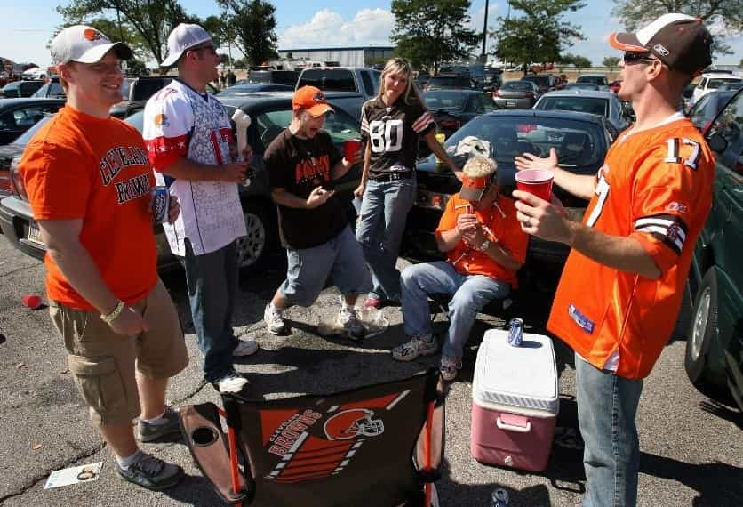
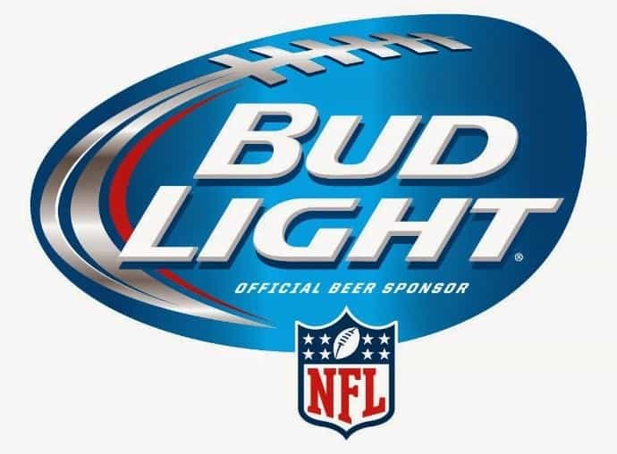
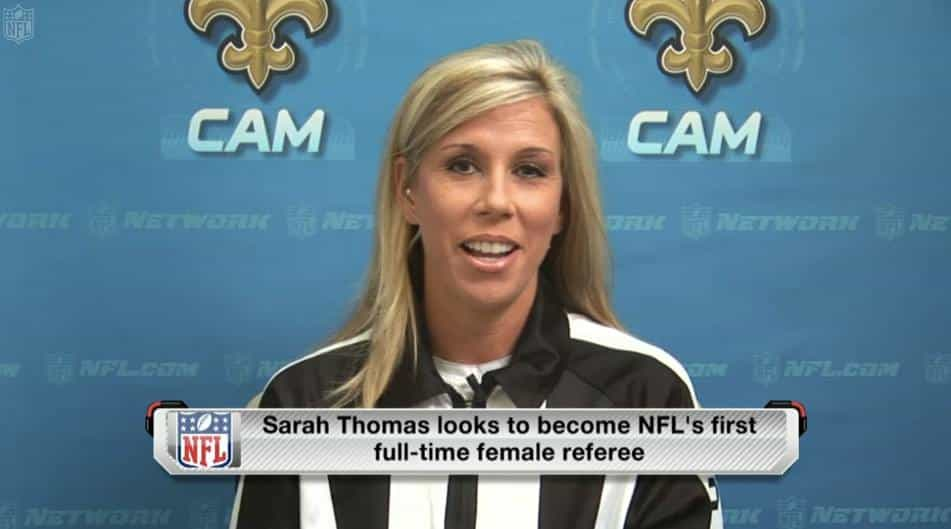
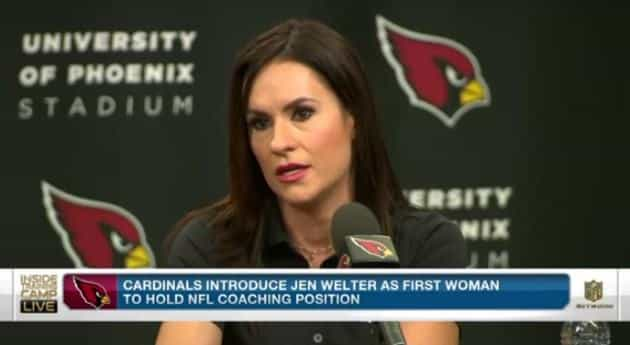
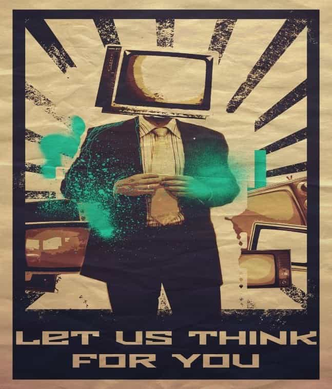

The football team or teams you’re seeing on the television or at the stadium aren’t “your” team. Truth is you personally don’t know any of them. “Your” team is actually owned by millionaire businessmen who are in the business of making money, your money. These people don’t actually have your best interests in mind when they do anything or make any decisions. It’s not there priority to cater to you or even necessarily entertain you unless it makes them money.
That Steelers hat you bought to show support for “your” team had the profit gained from it distributed across all 32 teams in the league. It feeds the whole machine, the one of complete strangers that don’t know or care about you. You’re a stupid mouth-breathing wallet to them. Truth is, the whole thing is a big money and time waste for you and your family.

Every time you go to a game, tune into a game, or even click on news articles related to the game, you are directly or indirectly feeding the machine and making more revenue for the fat cats. Unplug from it. Ask yourself the following questions. What difference does it make what these people are doing? How is this directly affecting me? Chances are the answers are it doesn’t make a difference and it’s not affecting me at all.

Drink more of these crappy beer
The subliminal message
Ever wonder why when you think of football it’s almost synonymous with drinking beer and eating food that is terrible for your health? Every commercial break is filled with fast food and beer advertisements. Me and the guys watching the big game drinking beer after beer and feeding our face with hot wings and pizza. This is what real men do?
No, my friends, that’s what guys like this do. I have absolutely nothing in common with men like that. It happened before in the Roman Empire the elites would put on events and give away free bread in the hopes of keeping the people entertained and oblivious of the corruptions of their leaders. Take a look at what’s going on in modern times. Its looks eerily similar, doesn’t it? And why not also sprinkle in feminism into an all-male sport and watch you accept it.


The NFL is a colossal waste of time
Seems like the older I get, the faster time goes by. Material possessions, jobs, and money come and go. Almost everything is replaceable. The one thing that is not replaceable is time. You only here for a moment and then you’re gone, your children are only little for a short while and then they’re grown. Time is precious, so be careful how you spend yours.
The NFL, NBA, NCAA, etc. are huge distractions to keep you weak and dumb. It affects some way more than others. I challenge you to do this: turn off your TV and electronics. Sit quietly and close your eyes. Take a few large breaths, in and out. Now look around. Breathe and relax. This is your life. This is where you’re at in your life. Every circumstance and decision has led you to where you’re at this moment. This is your existence and it’s ending one second at a time. While you’re bitching about who sat for the anthem or how the officials blew that call, millionaire politicians and business men are getting richer and more importantly keeping you distracted from what’s really going on behind the scenes.

Forget about who sat for what while hoping that “your” team improves this year or off-season and improve yourself. Pick up and learn a new hobby, practice martial arts, lift weights, start that diet you have been talking about doing for years. You will be surprised how much you can accomplish and improve without bothersome distractions in you’re life like televised sports.
No better time to jump off the NFL for good
No matter what your stance is, the point of kneeling during the national anthem is meant to get a rise out of people and care about the NFL. That is exactly what it’s doing. I compare the recent events in the NFL to an unruly woman shit testing her man, with the NFL being the woman and the fans being the man. How much can I get by with and him still support me? How much can we get by with and people still fork over their money and time?
The best solution is if it bothers you disconnect from it. Hit them where it hurts the most, their wallets. I unplugged from the distraction two years ago and I haven’t looked back. Now I have more time with family and focusing on self-improvement. I urge everyone who reads this to do the same.
Read More: Stop Watching Sports